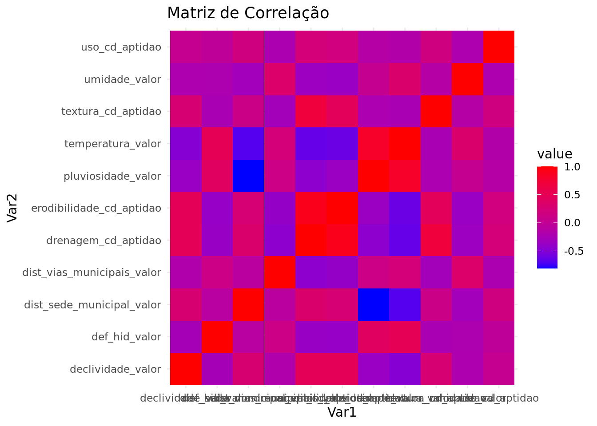

| declividade_valor | def_hid_valor | dist_sede_municipal_valor | dist_vias_municipais_valor | drenagem_cd_aptidao | erodibilidade_cd_aptidao | pluviosidade_valor | temperatura_valor | textura_cd_aptidao | umidade_valor | uso_cd_aptidao |
|---|---|---|---|---|---|---|---|---|---|---|
| 0 | 51.70340 | 34107.89 | 150 | 5 | 4 | 1525.620 | 24.58993 | 3 | 79.37140 | 5 |
| 0 | 51.68119 | 34082.75 | 180 | 5 | 4 | 1525.859 | 24.59034 | 3 | 79.37177 | 5 |
| 0 | 51.65906 | 34057.61 | 210 | 5 | 4 | 1526.099 | 24.59076 | 3 | 79.37214 | 5 |
| 0 | 51.63700 | 34032.48 | 240 | 5 | 4 | 1526.341 | 24.59118 | 3 | 79.37251 | 5 |
| 0 | 51.60953 | 34116.70 | 120 | 5 | 4 | 1525.219 | 24.58881 | 3 | 79.37157 | 5 |
| 0 | 51.58762 | 34091.54 | 150 | 5 | 4 | 1525.458 | 24.58922 | 3 | 79.37194 | 5 |
Gráfico de correlação entre os atributos
Carregando dataset
Matriz de Correlação
| declividade_valor | def_hid_valor | dist_sede_municipal_valor | dist_vias_municipais_valor | drenagem_cd_aptidao | erodibilidade_cd_aptidao | pluviosidade_valor | temperatura_valor | textura_cd_aptidao | umidade_valor | uso_cd_aptidao | |
|---|---|---|---|---|---|---|---|---|---|---|---|
| declividade_valor | 1.0000000 | -0.2641515 | 0.2817667 | -0.1818003 | 0.4923898 | 0.4872433 | -0.3683645 | -0.4819479 | 0.2660336 | -0.2014948 | 0.0356608 |
| def_hid_valor | -0.2641515 | 1.0000000 | -0.0943236 | 0.1114915 | -0.3702340 | -0.3814862 | 0.4193171 | 0.5013748 | -0.2351611 | -0.2054764 | -0.0266022 |
| dist_sede_municipal_valor | 0.2817667 | -0.0943236 | 1.0000000 | -0.0762483 | 0.3284476 | 0.2564773 | -0.8095353 | -0.6913517 | 0.1046582 | -0.3022294 | 0.1615564 |
| dist_vias_municipais_valor | -0.1818003 | 0.1114915 | -0.0762483 | 1.0000000 | -0.4448107 | -0.3935829 | 0.1089161 | 0.2161638 | -0.2947839 | 0.3351656 | -0.2155014 |
| drenagem_cd_aptidao | 0.4923898 | -0.3702340 | 0.3284476 | -0.4448107 | 1.0000000 | 0.9047199 | -0.4385747 | -0.6401772 | 0.6910129 | -0.3372822 | 0.2141532 |
| erodibilidade_cd_aptidao | 0.4872433 | -0.3814862 | 0.2564773 | -0.3935829 | 0.9047199 | 1.0000000 | -0.3540407 | -0.6167999 | 0.4557206 | -0.3679429 | 0.1725312 |
| pluviosidade_valor | -0.3683645 | 0.4193171 | -0.8095353 | 0.1089161 | -0.4385747 | -0.3540407 | 1.0000000 | 0.8230684 | -0.2190392 | 0.0275877 | -0.1351021 |
| temperatura_valor | -0.4819479 | 0.5013748 | -0.6913517 | 0.2161638 | -0.6401772 | -0.6167999 | 0.8230684 | 1.0000000 | -0.2360922 | 0.3213455 | -0.1610287 |
| textura_cd_aptidao | 0.2660336 | -0.2351611 | 0.1046582 | -0.2947839 | 0.6910129 | 0.4557206 | -0.2190392 | -0.2360922 | 1.0000000 | -0.1353107 | 0.1599242 |
| umidade_valor | -0.2014948 | -0.2054764 | -0.3022294 | 0.3351656 | -0.3372822 | -0.3679429 | 0.0275877 | 0.3213455 | -0.1353107 | 1.0000000 | -0.1956118 |
| uso_cd_aptidao | 0.0356608 | -0.0266022 | 0.1615564 | -0.2155014 | 0.2141532 | 0.1725312 | -0.1351021 | -0.1610287 | 0.1599242 | -0.1956118 | 1.0000000 |
Mapa de calor
